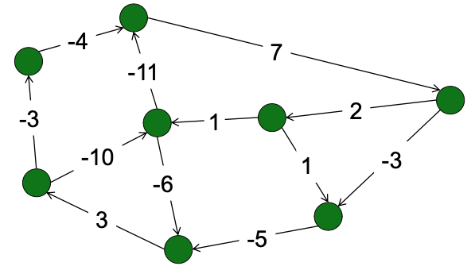
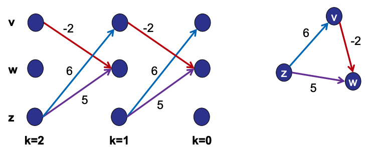
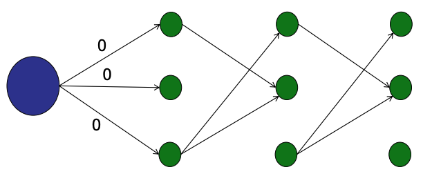
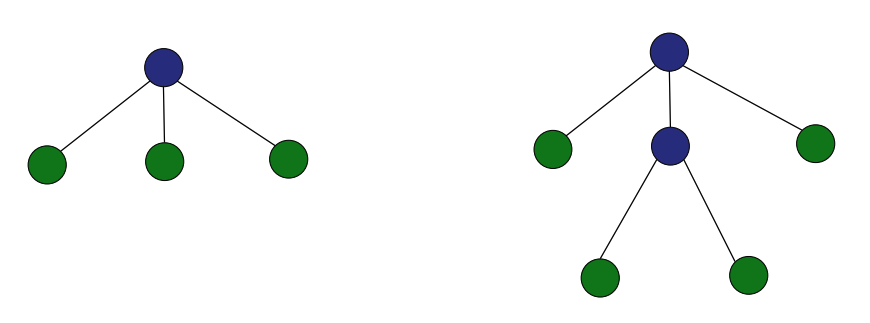
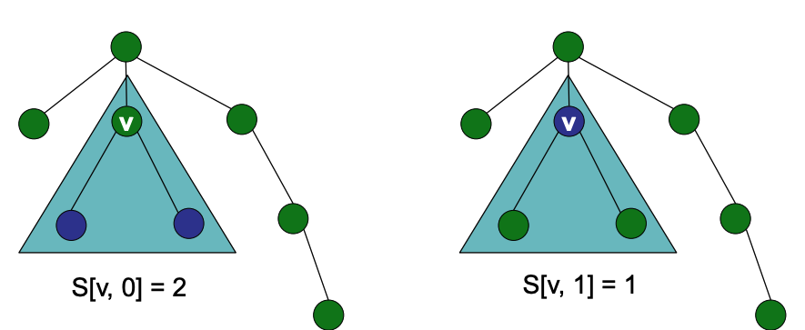
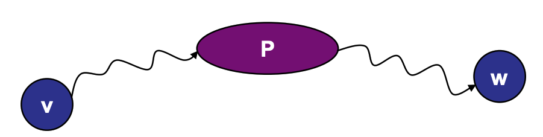
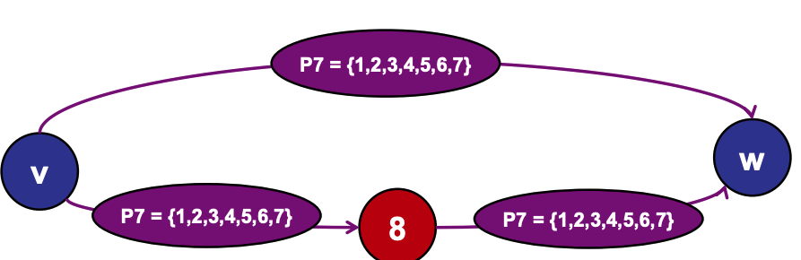

Dynamic Programming¶
Basics¶
Dynamic programming is just a fancy name for:
- Breaking up a problem into smaller sub-problems
- Optimal solution to sub-problems should be components of the optimal solution to the original problem
- Build the optimal solution iteratively by filling in a table of sub-solutions
- Take advantage of overlapping sub-problems
Overlapping sub-problems: The same smaller problem is used to solve multiple different bigger problems.

Basic Strategy: Bottom up dynamic programming¶

Basic Strategy: Top down dynamic programming¶

These are just brief concepts. We will understand them with various examples in the upcoming sections.
- Longest Increasing Subsequence
- Bounded Prize Collecting
- Vertex Cover on a Tree
- All-Pairs Shortest Paths
Longest Increasing Subsequence¶
Problem:. You are give an sequence of integers. Your goal is to find the increasing subsequence of maximum length.
DAG Solution¶
One way to find such maximum length is with Directed Acyclic Graphs. For each nodes, draw a directed array to any other nodes with greater value.

STEP 1: Topological sort STEP 2: Calculate longest path - DAG_SSSP. LIS = max(LP)+1 Performance: Longest path takes \(O(V+E)=O(n^2)\) , Run longest path \(n\) times \(O(n^3)\)
This is inefficient. We don't have to run it n times because to find the maximum path for a node, the maximum path for other connected node have to be solved. This is a example of a overlapping subproblems.
Using a bottom up approach¶
Start with the smallest sub-problem:

Move to the next node and examine all outgoing edges and find the maximum. Its largest path will be 1 + the maximum of the outgoing edge:

Continue for all nodes:

Performance: \(O(n^2)\)
Dynamic Programming Recipe¶
In summary the dynamic programming recipe consist of the following steps:
- Step 1: Identify optimal substructure
- E.g, LIS can be built from suffix LIS
- Step 2: Define sub-problems
- E.g., \(S[i]=\operatorname{LIS}(A[i . . n])\) starting at \(A[i]\)
- Step 3: Solve problem using sub-problems
- E.g., \(S[i]=\left(\max _{(i, j) \in E} S[j]\right)+1\)
- Step 4: Write (pseudo)code
- E.g. Code
Bounded Prize Collecting¶
Problem:. You are given a Directed Graph G=(V,E) and edges weights w which represents the prizes on each edges. Your goal is to find a path that maximizes the total collected by crossing at most k edges.

Idea 1:¶
- Transform G into a DAG
- Make k copies of every note. For a simple case for 3 node, it may look like:
- Solve prize collecting via DAG_SSSP (longest path)
- Running time = \(O(kVE)\) See PDF.

To reduce the running time, instead of starting the SSSP algorithm for each node separately, you can create a super source node where edges are all 0. This gives a running time of O(KE)

Idea 2:¶
- If you know the optimal solution for
(k-1, then it is easy to compute the optimal solution fork - Define
P[v, k]= maximum prize that you can collect starting at v and taking exactly k steps. - Solve
P[v,k]using subproblems:
Visit PDF for example. The cost is \(O(kE)\). See PDF
Vertex Cover on a Tree¶
Problem:. You are given a undirected, unweighted tree G=(V,E). Your goal is to find the size of a smallest set of nodes C where every edge is adjacent to at least one node in C

Notation:
S[V,0]= size of vertex cover in subtree rooted at node v if v is NOT covered.S[V,1]= size of vertex cover in subtree rooted at node v, if v IS covered.

Given these notations, the base case is starting at the leaves:
S[leaf,0]= 0S[leaf,1]= 1
Then,
- \(S[v, 0]=S\left[w_1, 1\right]+S\left[w_2, 1\right]+S\left[w_3, 1\right]+\ldots\) where \(w\) are the children of \(v\). This is because if \(v\) is not in the vertex cover, then we need to cover all of \(v\)'s children.
- \(S[v, 1]=1+\mathrm{W}_1+\mathrm{W}_2+\mathrm{W}_3+\ldots\)
- where \(\mathrm{W}_1=\min \left(S\left[\mathrm{w}_1, 0\right], S\left[\mathrm{w}_1, 1\right]\right)\) ...
- See code
Running time:
- 2V sub-problems
O(V)time to solve all subproblems- Each edge explored once.
- Each sub-problem involves exploring children edges.
All-Pairs Shortest Paths¶
Problem: You are given a directed, weighted graph G=(V,E). Your goal is to preprocess G to prepare for the query min-distance(v,w)
Solution: On preprocessing: Use Dijkstra algorithm for a node and store the weight for each nodes. Repeat for every other node
Floyd-Warshall¶
Let \(S[v,w,P]\) be the shortest path from \(v\) to \(w\) that only uses intermediate nodes in the set \(P\).

Solution: \(S[v,w,P_{n+1}] =\text{min}(S[v,w,P_{n}],S[v,n+1,P_{n}]+S[n+1,w,P_{n}])\). Where \(n\) is the nth node in \(P\). For example, if you want to find \(S[v,w,P_{8}]\), the possible path of going to \(w\) will look like this:
